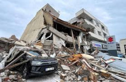

Maior terremoto no mundo
No Chile, em uma cidade chamada de Valdivia, no dia 22 de maio de 1960, ocorreu um tremor que ficou conhecido como o Grande Terremoto, uma vez que foi o abalo de maior intensidade já registrado na história com 9,5 graus na escala Richter (em uma escala que varia de 0 a 9), esse fenômeno gerou um grande tsunami que atingiu o litoral da América do Sul, Ilhas do Havaí a 10 quilômetros de distâncias.

Continue...